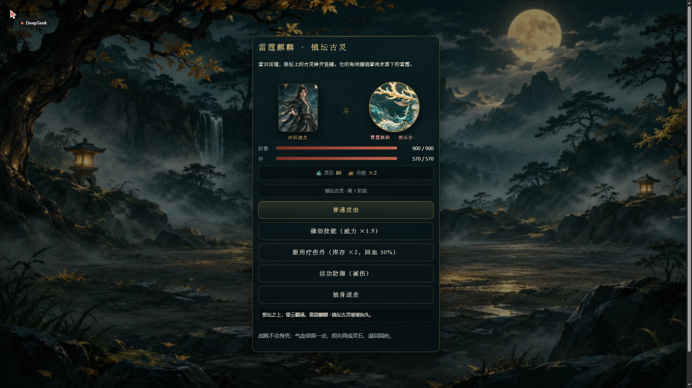
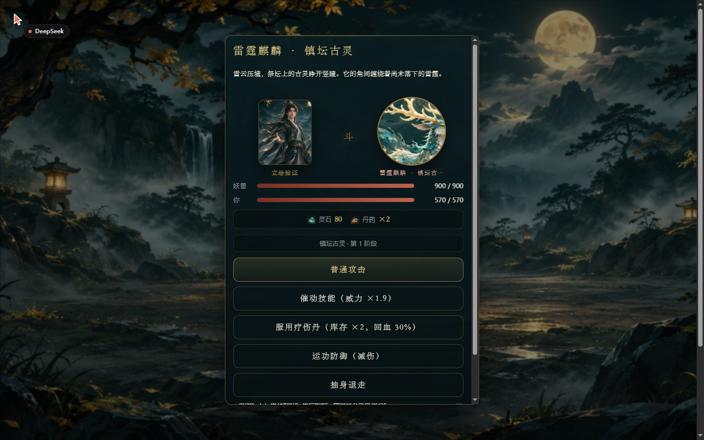
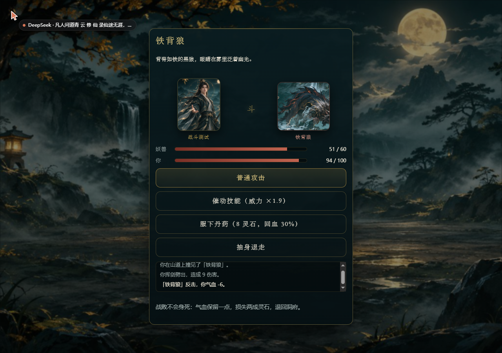
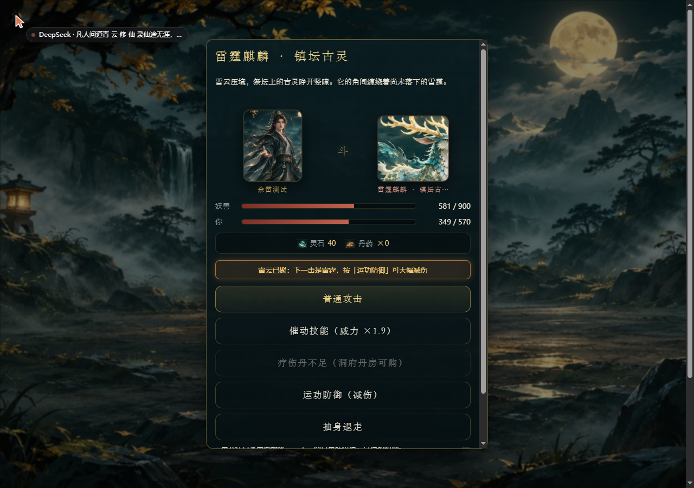
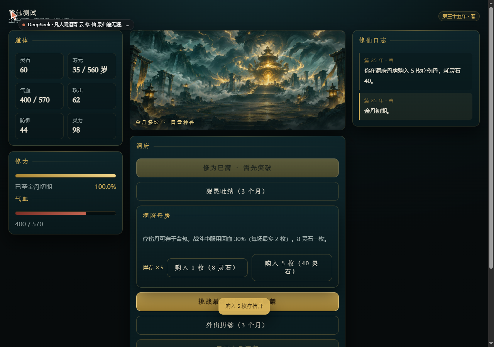
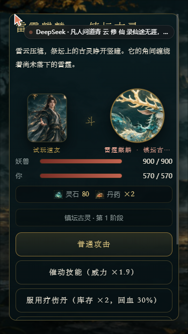
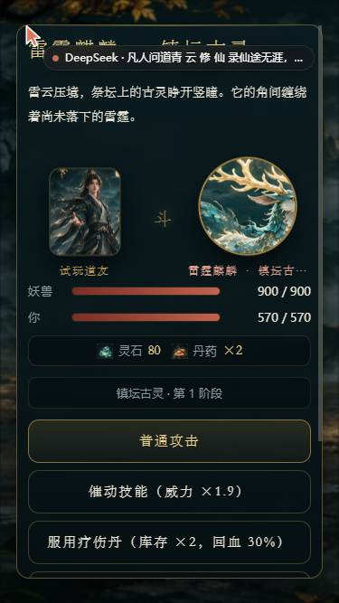
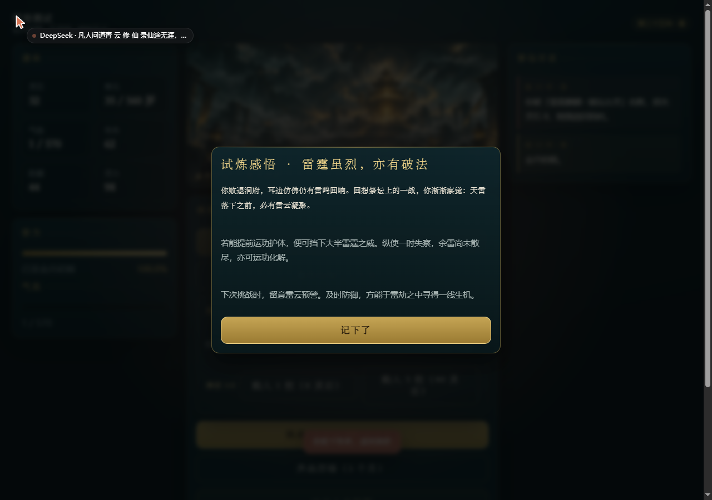

凡人问道
青 云 修 仙 录 · 试 玩 版
凡骨问天，一念登仙。 你本是青云山下的一介凡人。 从初入仙途，到炼气、筑基、金丹，每一次突破都意味着新的机缘，也可能遭遇未知的危险。 你可以闭关修炼、外出历练，在三十段奇遇中做出自己的选择； 也可以购买丹药、迎战妖兽，最终踏上金丹祭坛，挑战镇坛古灵。 你的仙途，由你决定。
初入仙途
- 闭关修炼：积累修为，为下一次突破做准备。修为满了才能尝试突破。
- 凝灵吐纳：稳定获得灵石。突破需要灵石，缺钱时用它。
- 外出历练：探索山林、遭遇奇遇，带回灵石与丹药；深入险地则会遇到妖兽。
- 洞府丹房：用灵石购买疗伤丹。战斗中服用一枚，回复三成气血，一场最多两枚。
- 运功防御：战斗时留意敌人预警。看到「雷云已聚」就运功护体；若一时没防住，下一回合的「余雷未散」还能补救。
- 保存进度：游戏自动保存在当前浏览器；也可以在设置里导出存档备份。
从这里开始
本页只是说明，游戏本体在另一个页面。
线上地址：https://fanren-wendao.pages.dev/
手机和电脑都能直接打开，不需要安装任何东西。
游戏截图








存档与备份
- 进度自动保存在你当前的浏览器里，清理浏览数据会丢失。
- 设置页可以「导出存档」得到一段文本，妥善保存；换设备时用「导入存档」恢复。
- 刷新页面不会丢进度：正在进行的战斗、还没做出选择的奇遇都会自动恢复。
已知不足
- 妖兽与古灵的立绘暂时是拼合素材裁切成的圆形肖像，还不是独立画作。
- 手机短屏战斗时，需要向下滚动才能看到最后一个按钮。
- 目前没有法宝、宗门与装备系统。
- 数值是用上千局模拟调出来的，还没有经过大量真人试玩校准。
想听你说（试玩后回答这几句就够）
- 你知道「修炼」和「凝灵」分别有什么用吗？
- 你第一次想服用丹药时，知道要先在洞府丹房买吗？
- 打古灵时，你看懂「雷云已聚」和「余雷未散」了吗？按过「运功防御」吗？
- 战斗每回合大约半秒，你觉得快了还是慢了？
- 哪一段让你觉得重复、不知道该做什么？
- 你还想再开一局吗？
直接把答案告诉开发者就行，不需要填写任何个人信息。